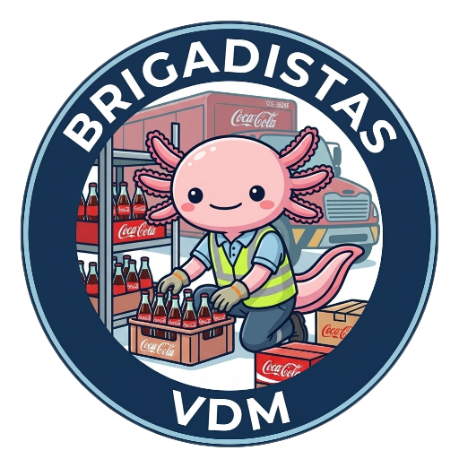

Lider Brigadas VDM
Alberto García Elizondo

Mapa Fresno
Mapa Tlalpan
Mapa Iztacalco
Mapa Viga
Mapa Zaragoza
Mapa Mixcoac
👁 Registro de actividades del brigadista
🚨 Iniciativas temporales
💎 Capacitación ICE 2026
📱 Herramientas de trabajo
💸 Calculadora de pago
⚙️ Reporte de errores EPICAAPP